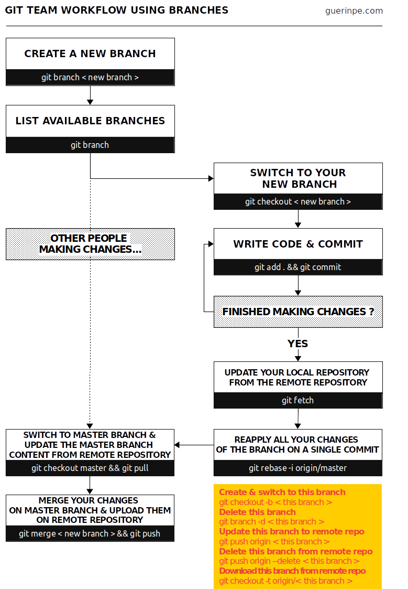

Trabajar con git
Una referencia rápida de los comandos básicos de Git para ayudar a los estudiantes a aprenderlo
November 26th, 2019. Pierre-Edouard GUERIN
He Estado usando git durante varios años, solo o en colaboración con mi equipo. Con el tiempo, he adquirido hábitos de uso que presento en este artículo.
¿Qué es git?
Cuando un proyecto informático se vuelve más complejo, es necesario dividirlo en versiones. Ya sea una progresión natural del proyecto a través del tiempo o simplemente para añadir opciones adicionales. La gestión de estas versiones sigue siendo tediosa a medida que el proyecto crece e incluso se vuelve arriesgada cuando el proyecto involucra a varios colaboradores.
git es el software que gestiona el versionado de los archivos. Más precisamente, obliga a los usuarios a versionar sus archivos sistemáticamente. Por último, no confundir git con gitlab, github o bitbucket que son forjas. Una forja permite trabajar en Internet con otros usuarios y ofrece un marco que abarca mucha más funcionalidad que la gestión de versiones.
Mi hoja de trucos para git
He definido dos tipos de utilización para git (delante y detrás). La parte delantera corresponde a un uso muy básico de git, adaptado para trabajar por turnos. La parte de atrás es un uso más avanzado de git con el uso de ramas. Esto implica comprobar una nueva rama, trabajar en ella, y luego fusionar los modificaciones en la rama principal master en un solo commit.

